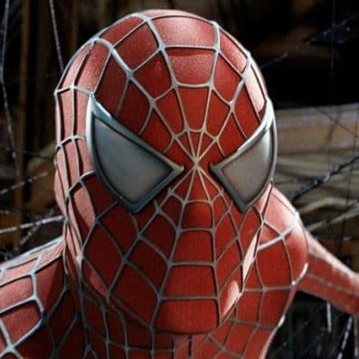
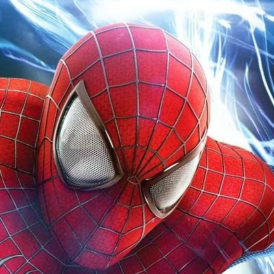
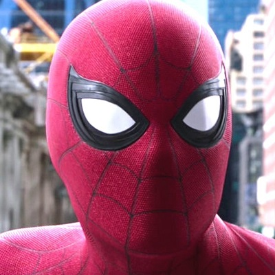
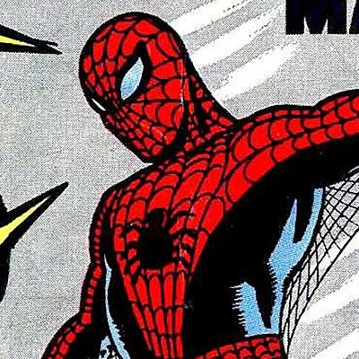
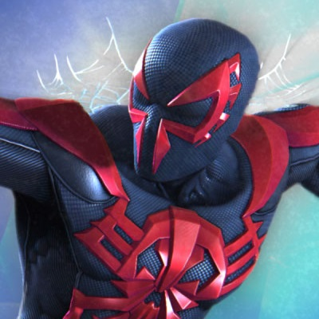
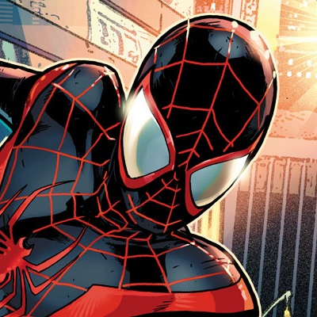
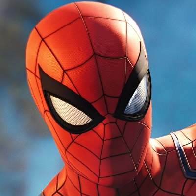
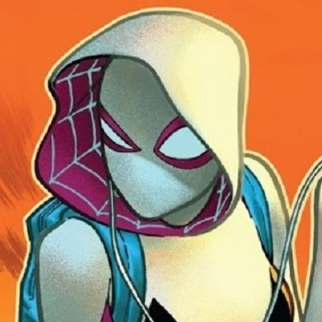

As variações do personagem
Esta página tenta mostrar todas as diferentes versões e variações do Homem-Aranha.
-
Tobey Maguire
(Terra 96283)
Homem-Aranha da trilogia de filmes de Sam Raimi, interpretado pelo ator Tobey Maguire.
Primeia aparição: 2002
-
Andrew Garfield
(Terra 120703)
Homem-Aranha dos filmes de Marc Webb, interpretado pelo ator Andrew Garfield.
Primeia aparição: 2012
-
Tom Holland
(Terra 199999)
Homem-Aranha dos filmes que fazem parte do MCU, interpretado pelo ator Tom Holland.
Primeia aparição: 2016
-
Original
(Terra 616)
Primeira aparição do Homem-Aranha nos quadrinhos, na série de revistas Amazing Fantasy.
Primeia aparição: 1962
-
Miguel O'Hara
(Terra 928)
Homem-Aranha de um universo alternativo no ano de 2099. O herói é Miguel O'Hara é o herói.
Primeia aparição: 1992
-
Miles Morales
(Terra 1610)
Homem-Aranha de um universo alternativo onde Peter Parker morreu e o herói é Miles Morales.
Primeia aparição: 2011
-
Peter Parker
(Terra 1048)
Homem-Aranha dos jogos criados pela Insomniac Games, exclusivos para as plataformas Playstation.
Primeia aparição: 2018
-
Spider-Woman
(Terra 65)
Nesse universo, ao invés de Peter, foi Gwen Stacy quem foi picada e se tornou a Mulher-Aranha.
Primeia aparição: 2014
-
Spider-man Noir
(Terra 90214)
Homem-Aranha de um universo alternativo no ano de 1933. Peter é um vigilante e até usa armas.
Primeia aparição: 2009